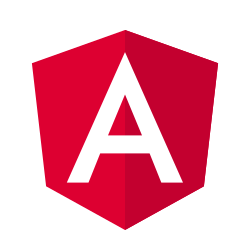
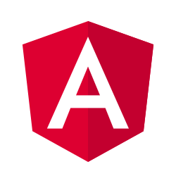

Portafolio
Personal
TECNOLOGIAS USADAS:


 
Desarrollé un portafolio personal utilizando HTML, CSS y JavaScript para mostrar mi trabajo y
habilidades en diseño y desarrollo web de manera creativa y profesional.

Desarrollé un portafolio personal utilizando HTML, CSS y JavaScript para mostrar mi trabajo y
habilidades en diseño y desarrollo web de manera creativa y profesional.

Aplicación de
Tareas
TECNOLOGIAS USADAS:
Creé una aplicación de gestión de tareas con React.js y Tailwind CSS, que permite a los usuarios
organizar sus actividades de manera eficiente y visualmente atractiva.
Calculadora de
Propinas
TECNOLOGIAS USADAS:
Diseñé una calculadora de propinas con HTML, CSS y JavaScript para ayudar a los usuarios a calcular
rápidamente la propina adecuada en restaurantes y establecimientos.
Widget de Clima
TECNOLOGIAS USADAS:
Desarrollé un widget de clima utilizando Vue.js y CSS Grid, que muestra información meteorológica
actualizada de manera clara y concisa en sitios web y aplicaciones.